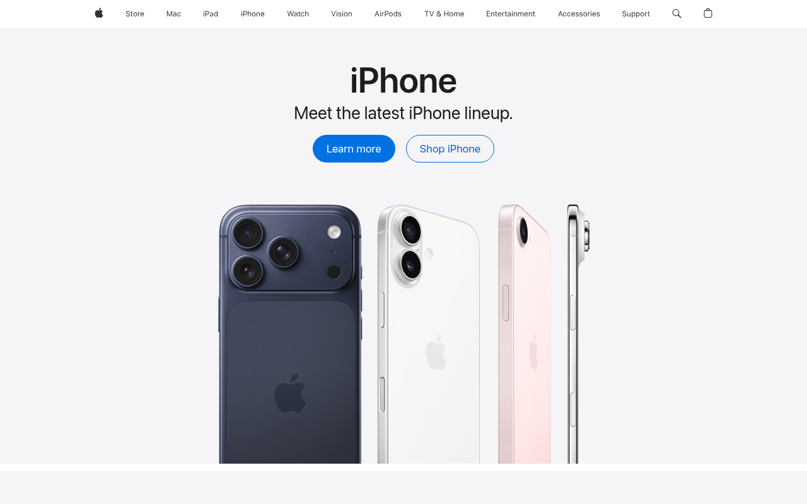

Apple — SkinKit (--sk-*)
https://apple.com 이 실제로 서빙하는 CSS에서 직접 뽑은 디자인 토큰·타이포그래피·컴포넌트 스펙. 모든 값은 CSS 커스텀 프로퍼티를 파싱한 결과이고, AI 추론이나 추측은 섞이지 않았다.

body {
font-family: "SF Pro Text", "SF Pro Icons",
-apple-system, BlinkMacSystemFont,
"Helvetica Neue", sans-serif;
font-weight: 400;
}
:root {
--bg: #F5F5F7; /* 오프화이트 */
--fg: #1D1D1F; /* 따뜻한 다크 */
}
body {
background: var(--bg);
color: var(--fg);
}
:root {
--brand: #0071E3;
/* CTA · focus ring
모두 이 색 */
}
#FFFFFF(순백)으로 두는 것.
Apple의 실제 페이지 배경은 #F5F5F7이다. 순백으로 두면 Apple 특유의 고급스러운 공기감이 사라지고 그냥 평범한 흰 페이지처럼 보인다.
출처와 수집 기준
URL · fetch 시점 · 파싱 방식까지 모두 CSS 번들에서 직접 뽑은 값이다.
https://apple.com--sk-* (SkinKit)테크 스택
프레임워크, 디자인 시스템, CSS 아키텍처, 테마, 폰트 로딩 방식.
ac-globalfooter, ac-localnav)--sk-*--sk-focus-color, --sk-button-background) + comp (--localnav-focus-color)ac-globalfooter, ac-localnav, ac-ln-button#F5F5F7#0071E3 — --sk-focus-color, --sk-button-background 전부 이 색. focus ring과 CTA 버튼이 동일한 blue를 공유한다.타이포그래피
SF Pro Text(본문)와 SF Pro Display(헤딩)를 구분하는 것이 Apple 타이포의 핵심이다. Heading에는 반드시 negative letter-spacing을 적용해야 한다.
SF Pro Display — Apple 전용, 재배포 불가. 헤딩에 사용.
SF Pro Text — Apple 전용, 본문에 사용.
-apple-system, BlinkMacSystemFont, "Helvetica Neue", Helvetica, Arial
400 / 600
-apple-system, BlinkMacSystemFont fallback이 동일 폰트를 로드한다.
무료 대체재로는 Inter가 근접하다.
-0.01em(소형 heading) ~ -0.02em(대형 heading/hero). 이 미세 조정이 없으면 Apple 특유의 타이트하고 세련된 제목 느낌이 나지 않는다.
컬러
브랜드 블루 #0071E3을 중심으로 3단계 인터랙션 상태와 다크 variant가 정의된다. 중성 팔레트는 순흑/순백이 아닌 따뜻한 near-black과 오프화이트를 쓴다.
- Default:
#0071E3 - Hover:
#0076DF(살짝 밝아짐) - Active:
#006EDB(살짝 어두워짐)
#0071E3 그대로 쓰지 말고 #2997FF로 교체해야 한다.
스페이싱
SkinKit의 focus ring offset이 핵심 spacing 토큰이다. Apple은 4px 배수 그리드를 기반으로 하되, 섹션 간격은 넉넉히 52px을 쓴다.
--sk-focus-offset: 1px (전체 focus ring 오프셋),
--sk-button-focus-offset: 3px (버튼 컨테이너 focus offset).
접근성 원칙상 이 값을 0으로 두지 않는다.
라디우스
Apple CTA 버튼의 980px pill shape이 가장 특징적이다. 제품 카드는 18px, 소형 배지는 4px로 층위를 구분한다.
소형 배지
소형 요소
제품 카드
대형 카드/모달
CTA 버튼
border-radius: 980px은 실제 DOM에서 추출된 값이다.
컴포넌트
SkinKit 버튼 시스템의 핵심은 3-state 상태 전환과 pill shape이다. 네비게이션 neutral 버튼은 #1D1D1F 다크 배경으로 별도 처리된다.
--sk-button-background: #0071E3--sk-button-color: #FFFFFF--sk-button-background-hover: #0076DF--sk-button-background-active: #006EDBborder-radius: 980px (pill shape)font-weight: 400CTA 버튼 · SkinKit 기반 · 3-state hover/active 필수
background: #1D1D1Fcolor: #FFFFFFhover: #272729active: #18181Aborder-radius: 980pxsecondary CTA · 다크 neutral 톤
라이팅 원칙
Apple의 카피는 간결하고 감성적이다. 기술 용어는 최소화하고, 마침표는 생략한다. CTA는 직접적인 동사형으로 써야 한다.
CSS · Drop-in
루트 스타일시트에 바로 붙여넣으면 Apple 디자인 토큰을 그대로 쓸 수 있다.
/* Apple — copy into your root stylesheet */ :root { /* Fonts */ --font-family: "SF Pro Text", "SF Pro Icons", -apple-system, BlinkMacSystemFont, "Helvetica Neue", sans-serif; --font-family-display: "SF Pro Display", "SF Pro Icons", -apple-system, sans-serif; --font-weight-normal: 400; --font-weight-bold: 600; /* Brand (anchor + 3-state) */ --brand-active: #006EDB; --brand-500: #0071E3; /* ← canonical */ --brand-hover: #0076DF; --brand-dark: #2997FF; /* 다크 배경 링크 */ /* Surfaces */ --bg-page: #F5F5F7; /* 오프화이트 — 순백 아님 */ --bg-dark: #1D1D1F; --text: #1D1D1F; --text-muted: #6E6E73; /* Key spacing */ --space-sm: 8px; --space-md: 20px; --space-lg: 52px; /* Radius */ --radius-sm: 4px; --radius-md: 18px; --radius-pill: 980px; /* CTA 버튼 */ /* Focus ring (SkinKit) */ --sk-focus-color: #0071E3; --sk-focus-offset: 1px; --sk-button-focus-offset: 3px; }
// tailwind.config.js module.exports = { theme: { extend: { colors: { brand: { DEFAULT: '#0071E3', hover: '#0076DF', active: '#006EDB', dark: '#2997FF', }, surface: { page: '#F5F5F7', dark: '#1D1D1F', muted: '#6E6E73', }, }, borderRadius: { card: '18px', pill: '980px', }, fontFamily: { sans: ['SF Pro Text', 'SF Pro Icons', '-apple-system', 'BlinkMacSystemFont', 'Helvetica Neue', 'sans-serif'], display: ['SF Pro Display', 'SF Pro Icons', '-apple-system', 'sans-serif'], }, }, }, };
Do / Don't
Apple 디자인 시스템을 구현할 때 가장 자주 틀리는 항목들.
DO
- 페이지 배경은
#F5F5F7을 써라 — 순백이 아닌 Apple의 시그니처 오프화이트다. - 텍스트는
#1D1D1F를 써라 — 순흑이 아닌 따뜻한 다크다. - CTA 버튼에 3단계 상태를 모두 구현하라:
#0071E3→#0076DF→#006EDB. - focus ring 색도
#0071E3으로 CTA와 일치시켜라 — SkinKit 원칙이다. - 큰 heading에
letter-spacing: -0.02em을 적용하라. - CTA 버튼은 pill shape(border-radius 980px)으로 만들어라.
DON'T
- 배경을
#FFFFFF로 두지 마라 — Apple의 배경은#F5F5F7이다. - CTA 버튼을 정사각형으로 만들지 마라 — Apple은 pill shape(980px)이다.
- SF Pro를 재배포하지 마라 — 라이선스 위반이다.
-apple-system, BlinkMacSystemFont를 쓰라. - 다크 배경 링크에
#0071E3을 그대로 쓰지 마라 — 다크에서는#2997FF로 교체해야 한다. - heading에
font-weight: 400을 쓰지 마라 — Apple heading은600이다.